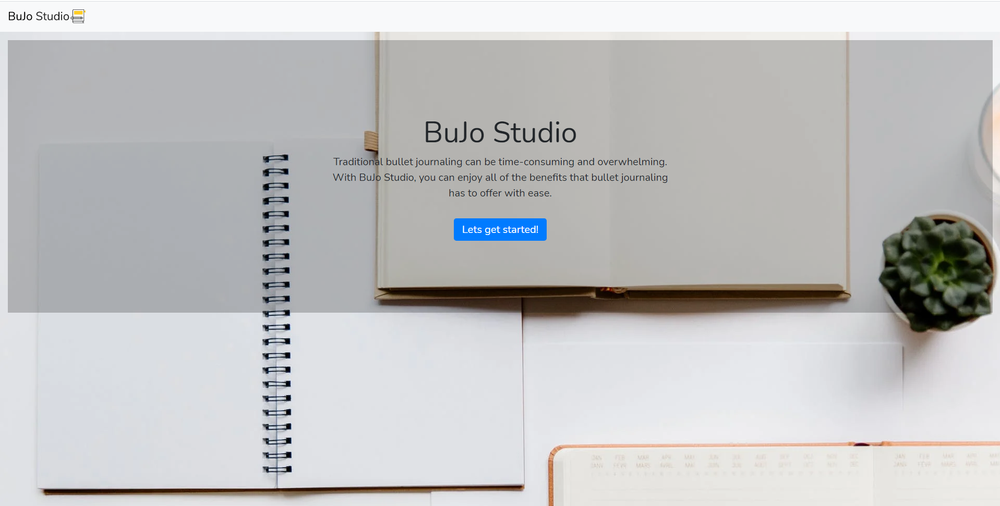

いらっしゃませ！西岡ティモシー大輔と申します
アバウト

学歴
University of California, San Diego - 経済 B.A.
- メジャー GPA: 3.501
- 受賞日: 2022年12月
University of California, San Diego - コンピューターサイエンスアンドエンジニアリング B.S.
- メジャー GPA: 3.313
- 受賞日: 2022年12月
全体的なGPA: 3.328
- Microeconomics A, B, C
- Macroeconomics A, B
- Econometrics A, C
- Decisions Under Uncertainty
- Game Theory
- Industrial Organization
- Advanced Data Structures
- Algorithm Design and Analysis
- Software Engineering
- Principles of Computer Operating Systems
- Intro to Computer Security
- AI: Search and Reasoning
- Intro to Modern Cryptography
好きなクラスのリスト:
- Engineering Calculus A, B, C
- Discrete Mathematics
- Linear Algebra
- Microeconomics A, B, C
- Macroeconomics A, B
- Econometrics A, B, C
- Decisions Under Uncertainty
- Game Theory
- Industrial Organization
- Advanced Data Structures
- Theory of Computation
- Algorithm Design and Analysis
- Software Engineering
- Web Client Languages
- Intro to Computer Architecture
- Principles of Computer Operating Systems
- Programming Languages: Principles and Paradigms
- Intro to Computer Security
- Interaction Design
- AI: Search and Reasoning
- Intro to Modern Cryptography
- Recommender Systems and Web Mining
とった注目すべきクラスのリスト:

プロジェクト
Bujo Studio
ソフトウェアエンジニアリングの授業で他の学生とグループを組んでジャーナリングアプリを三か月で制作する指示を受けました。 私は八人の生徒のグループのリーダーとして決められ、 used Agile development techniques を使ってこのプロジェクトを完成しました。 すでに平均より小さいグループでしたが、その上にメンバーが働けなくなってしまった事情や、当時の私と他のメンバーのウェブアプリ創作の経験不足があり、指導者も私たちが完成品を提出すると予想もしませんでした。 だがしかし、私たちの頑張りでウェブアプリ創作を早く学び、働けなくなったメンバーを徹夜してでもカバーしたりと、最終的に完成品を出す事が出来ました。そのおかげで私たち全員Aを貰いました。 このプロジェクトでは私はこのアプリの全創作に手を入れてましたが、主に手を入れた場面はアプリのフロントエンドとフロントエンドで入力したデータをバックエンドに繋げる所でした。その理由はグループの中にすでにバックエンドに経験がある生徒がすでに何人か居ました。
ここでプロジェクトを見る
3BC Processor
コンピューターアーキテクチャ授業の依頼で他の生徒二人とエラーコレクションに特化されたカスタムプロセッサーを一から創作しました。 このプロセッサーはハミングエンコーディング、SECDEDデコーディング、パターンマッチングをレポで書いてある制限の中で出来るように依頼されてました。 私たちはISAから、VerilogでのALUモデル、そしてプロセッサーに対応するアセンブリー言語を作りました。私たちのプロセッサーは一つ目のタスクを問題なしでできましたが他のタスクにバグがあったため、B+を貰いました。 結果としてＢ＋を貰いました。
ここでプロジェクトを見る
日本ビール研究
For my Industrial Organizationの授業で貰ったビールのデータで「エクスプロレーション」を研究する仕事を頼まれました。授業中で習ったアイデアとかをそのデータを使ってどうやってビール企業は競争をするのかを説明するレポートを書く所でしたがコロナ鍋の為に私は日本でオンラインで授業を取っていました。 日本のビール企業はアメリカのビール企業とどう違うのかと考えてエマニュエル・ベスパ教授に日本のスーパーに行って自分のデータを集めた後、そのデータを使って自分の分析をする許可を貰いました。何との通り、日本のビール企業はアメリカのビール企業と同じく、価格とかアルコール含有量ではなく広告で競争をしていると発見し、Ａを貰いました。
ここでレポートをダウンロードする
First Annual UCSD Kendo Club Tournament
As president of the UCSD Kendo Club, my main goal during my term was to secure a strong renewal to the club's vitality following a severe stagnation in membership, functions, and participation from the COVID pandemic. Me and my management board that I had appointed agreed that one of the main pillars of achieving this goal was to organize the club's first tournament in its 25 year history. We communicated with UCSD administration to get permission to host the event, invited instructors all over San Diego to judge, and rallied UCSD Kendo Club members to participate, among a giant list of other things to provide an overall successful tournament experience. Of course, since this was the first tournament the club had ever organized, there were a few mishaps along the way so we later got together to write up a list of guidelines on what worked and what didn't. To this day, the UCSD Kendo Club hosts this tournament annually every fall with each year improving on the last. To this day, it is one of the projects I am most proud of contributing to.
実績
武道
日本の武道は私の発展とアイデンティティーに重大な影響があります。子供の頃の合気道の稽古からUC San Diegoの剣道と居合道部の部長としてリーダーシップを取るまで 私はどんなに忙しくても武道化として、主に人間として成長する時間を尽くしています。以下の実績はその一生懸命に得た人間としての成長の成果とも言えます。

全日本合気道会 - 初段
- 受賞日: 2018年4月
南カリフォルニア剣道会 - 三級
- 受賞日: 2022年4月
Mazuru Kai Iaido Dojo - 5th Kyu Rank
- Awarded: May 2022
2021年 UCSD 剣道部大会 - 上級者部1位
- 部員と一緒にUCSDの剣道部の出来て25年の始めての大会を開催しました。30人程の良い参加率がいて勝ってしまいまた。
- 受賞日: 2021年11月
2022年サンディエゴ剣道部大会 - 山本カップ2位
- この大会はUCSDの剣道部に繋がっている道場が毎年John K. Yamamoto先生の記念に開催している大会です.
- 受賞日: 2022年3月

2022年 UCLA yuhihai tournament - 級者団体戦2位
- これは毎年UCLAが開催する名誉ある大会でアメリカ全国の大学剣道部が参加する大会です.
- 受賞日: 2022年4月
UCSD 剣道部‐部長
- 部員だった四年間の間で秘書から副部長、部長まで上がりました。
- 合計10人の管理委員会で私たちは以下を達成しました:
- コロナ鍋からの深刻な停滞の後、年の始まりでは15人の部員から80人まで拡張
- 道場内での正しい礼儀を教え、部員が怪我しないように準備体操をリード
- 部の30年の歴史での始めての大会を開催
- UCSD内の他の部活やクラブと組んで剣道、又は私たちの部活を紹介するデモを開催
- 部のコミュニティーを強化するために稽古以外のイベントやソーシャルを企画
- 新しい部員の参入障壁を出来るだけ竹刀と防具の価格を武道具の店と交渉
- 部員限定のジャケットやT-シャツをデザインし販売。勿論利益は大会とかソーシャルとかに入れた。
- 他所の大会費の補助金を参加する部員に出せる為に募金活動を企画
- 部員、後輩の悩み相談や指導

- 任期: 2021年6月 - 2022年6月
UCSD 居合道部‐部長
- 唯一の部員から部長になった私は以下を達成しました:
- 部のメンバーを私だけから15人まで拡張。コロナ鍋の後、居合道部は潰れる所でした。
- 部員3人を管理委員会にレクルート。
- 部員一人一人の武道具費の補助金を出す為に募金活動を企画。
- 二度と部員一人だけの状況にならないように剣道部を管理していて習ったベストプラクティスをガイドライン化。
- 任期: 2020年6月 - 2022年6月
連絡


 クリップボードにtchon@ucsd.edu をコピー
クリップボードにtchon@ucsd.edu をコピー